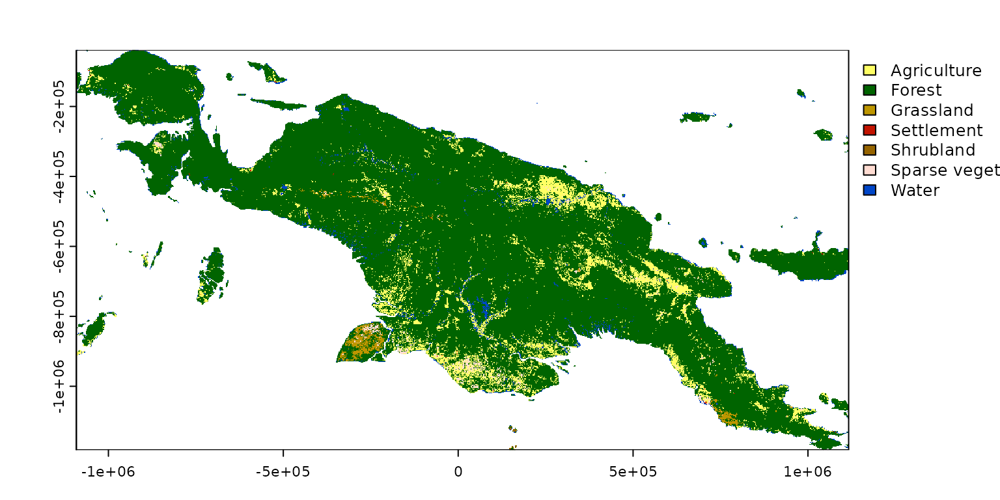
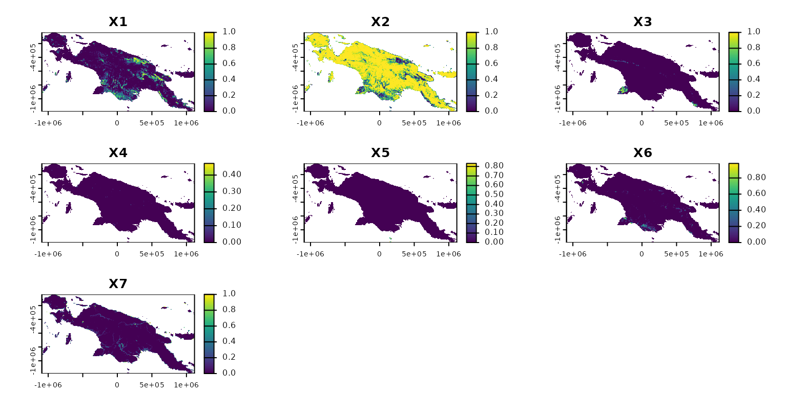
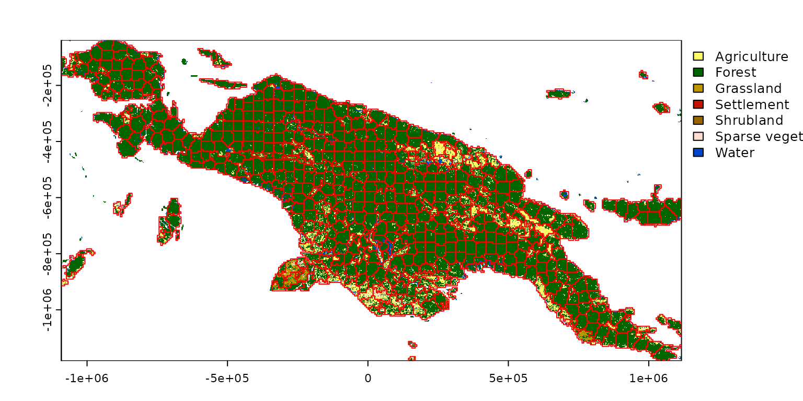

Superpixels of spatial categorical patterns
Jakub Nowosad
2024-08-24
Source:vignettes/articles/motifels.Rmd
motifels.RmdSuperpixels is a collection of segmentation concepts of grouping pixels with similar characteristics. It is often used in computer vision to delineate parts of RGB images that are more meaningful and easier to analyze. When applied to RGB images, each superpixel contains similar colors that also could represent real-world objects. A large number of methods for creating superpixels were developed in the last decades, with the SLIC algorithm (Achanta et al. (2012), doi:10.1109/TPAMI.2012.120) being the most prominent.
The supercells package aims to utilize the concept of superpixels to a variety of spatial data. This package works on spatial data with one variable (e.g., continuous raster), many variables (e.g., RGB rasters), and spatial patterns (e.g., areas in categorical rasters). Therefore, it enables not only to find areas that look similar on an RGB (satellite) image, but also to regionalize areas with comparable values of one or more variables.
This vignette shows how to use the supercells package on a categorical raster dataset. To reproduce the following results on your own computer, install and attach the packages:
library(supercells) # superpixels for spatial data
library(terra) # spatial raster data reading and handling
#> terra 1.7.81
library(sf) # spatial vector data reading and handling
#> Linking to GEOS 3.12.1, GDAL 3.8.4, PROJ 9.3.1; sf_use_s2() is TRUE
library(motif) # tools for working with categorical spatial patternsThe first step is to read the input data. This time our input data
landcover2015.tif, included in the motif
package, that contains land cover data for New Guinea.
landcover = rast(system.file("raster/landcover2015.tif", package = "motif"))
plot(landcover)
Next, we need to derive some key information about the categorical spatial patterns of the New Guinea land cover. This can be done with motif – below, we calculate compositions of land cover categories (learn about it more in Nowosad (2021)) for non-overlapping windows of 20 by 20 cells, and then convert it back into a terra object.
comp_output = lsp_signature(landcover, type = "composition", window = 20,
normalization = "pdf", ordered = FALSE)
#comp_output = lsp_restructure(comp_output)
comp_output = lsp_add_terra(comp_output)
comp_output
#> class : SpatRaster
#> dimensions : 191, 368, 9 (nrow, ncol, nlyr)
#> resolution : 6000, 6000 (x, y)
#> extent : -1091676, 1116324, -1184556, -38556.49 (xmin, xmax, ymin, ymax)
#> coord. ref. : +proj=cea +lat_ts=5.5 +lon_0=140.8 +x_0=0 +y_0=0 +ellps=WGS84 +units=m +no_defs
#> source(s) : memory
#> names : id, na_prop, X1, X2, X3, X4, ...
#> min values : 1, 0.0, 0, 0, 0, 0.0000000, ...
#> max values : 70288, 0.9, 1, 1, 1, 0.4690909, ...The result, comp_output, contains two layers with
metadata (id and na_prop), and sever layers
with a proportion of each land cover category for each window. We can
select only the latter layers as the metadata is not needed for the
following calculations.

Finally, we are able to use the supercells() function to
delineate areas with similar proportions of different land cover
categories. I decided to derive about 2,000 superpixels that will be
created based on the Jensen-Shannon distance
(dist_fun = "jsd"). This distance measure is more suitable
for proportions (e.g., 0-1) than the default Euclidean distance.
slic = supercells(comp_output2, k = 2000, compactness = 0.1, dist_fun = "jsd")The result is an sf object containing derived
superpixels with attributes storing the average proportions for each
superpixel:
plot(landcover, reset = FALSE)
plot(st_geometry(slic), add = TRUE, border = "red")